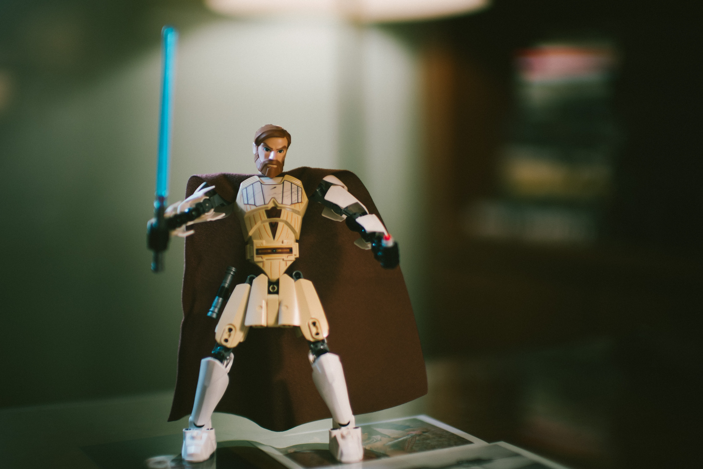

A New Type Science Fiction Movie
The Phantom Menace was released in theaters on May 19, 1999, almost 16 years after the premiere of Return of the Jedi. During that time Countless books were written, TV shows produced, expanding the universe and its posibilities.
Lucas Again found himsels in the inovating again. With emergence of CGI, IMAX and many other advances, Star Wars was once again in the drivers seat headed to new horizons, galexies away from any competition.
"You simply have to put one foot in front of the other and keep going. Put blinders on and plow right ahead."- George Lucas
Lucas wasted no time adding in his new toys.On the very first scenes we saw action like never before, with baster bolts, Jedis doing flips and using the CGI in a level that was almost mistakable as real. The beautiful futeristic scenes that they created were nearly flawless for such new tech and tehy did not shy away from using it to protray main characters.
Unlike the orignals espisodes 1-3, play alot more attention to trying help viewers understand the dynamics of the Star Wars universe. The writter took it slow and explained the lores, identified resonings for actions. Which many fans may have found un enjoyable, but this was more then made up for by the sheer amount of action in the movies.
How successful was the New Trilogy?
Well we can say and see that today it was probaly the most succesfull story franchise until the Marvel moviescame about. THe TV show around the movies spanned 10 years after the realease of espisode one. And they have as recently as 2018 added to the clone wars TV show. Episode 3 Revenge of The Sith still is watch today with more then any other star wars movie ever made.
 Children grown up in the 2000s would bot have been suprised to know that you owned a star wars action figure.With the rising populararity of video games, toys and DVD sale became not the only way to keep fans ingaged. The amount of star wars games saw a huge explosion in the video game industy. A game of each movie plus others for the extended universes and story lines. Adding book sale the amount of money that was made through the 2000s and 2010s from espisode 1-3 is astronomical to say the least.